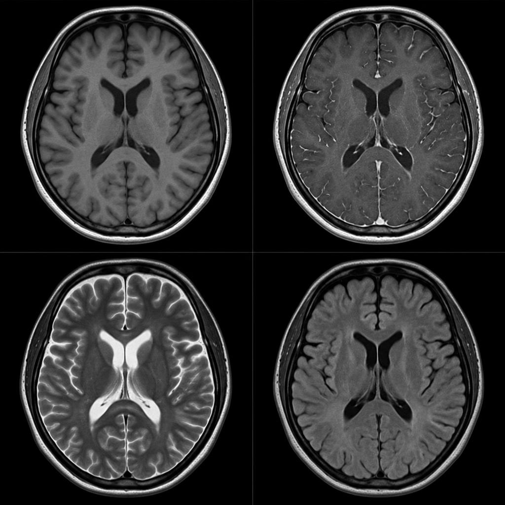
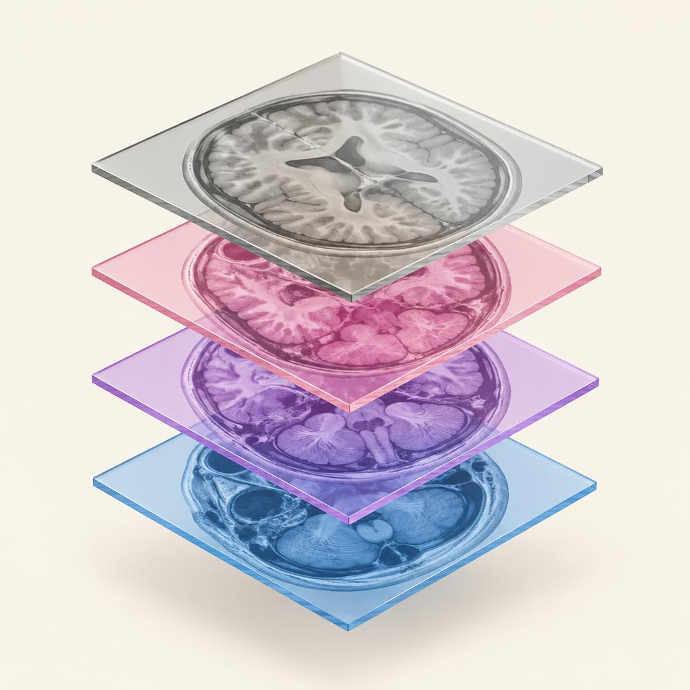
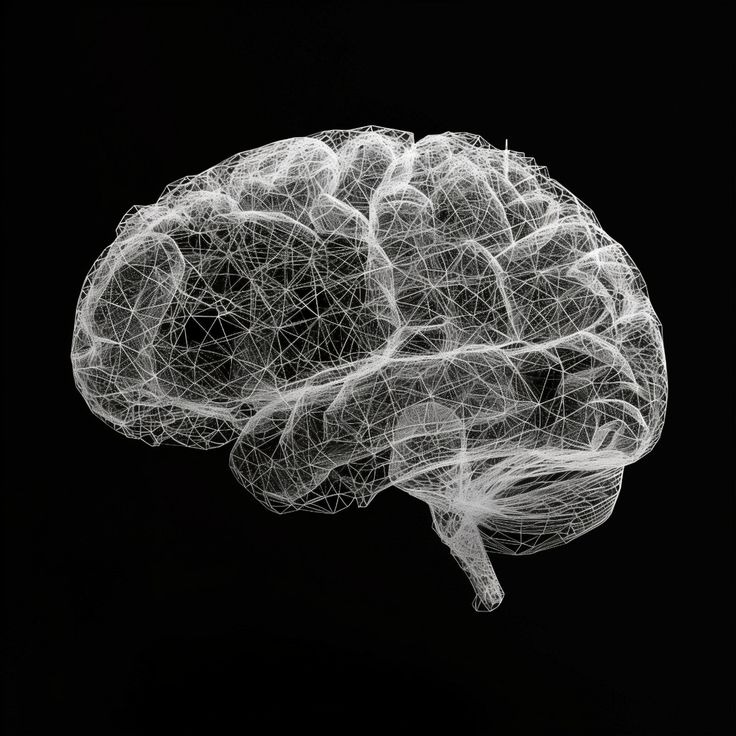

NeuroScope 3D
Unfolding the Unseen
02The Process
From Slices
to Structure.
Four MRI sequences. Deep-learning segmentation. Interactive 3D cortical analysis.
- 1
Input
FOUR MRI SEQUENCES
T1 
T1Gd T2 FLAIR Four sequences reveal complementary brain information.
T1·T1Gd·T2·FLAIR - 2
Interpretation
MULTI-PLANAR CONTEXT

MRI data provides complementary anatomical context.
- 3
Segmentation
TUMOUR COMPARTMENTS
WT· TC· ETAI predicts tumour regions in the MRI.
WT·TC·ET - 4
Visualization
3D EXPLORATION

Explore predicted regions in interactive 3D.
03What We Do
Explore Every
Dimension.
A complete 3D view of the brain, designed to make complex MRI information easier to explore.
04Our Novelty
A Different Way
to See the Brain.
Bridging deep-learning segmentation with explicit graph-theoretic spatial models and reproducible geometric quantification.
G = (V, E, w)
Dijkstra GeodesicsShortest Path: S → v₁ → v₃ → v₅ → TCost Σ = 4.0
Graph-Based Spatial Analysis
Print 2 of 3: Graph-Based Spatial Analysis